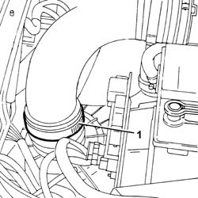
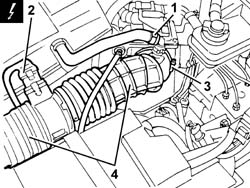
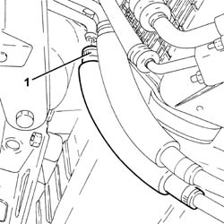
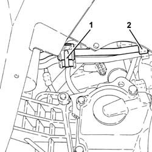
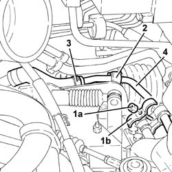

4130B71 intermediate return pipe between power steering case and heat exchanger r r for right hand drive versions
- Path
- Procedures > 41 STEERING > 4130 POWER ASSISTED STEERING > 4130B power steering hydraulic sytem > 4130B71 intermediate return pipe between power steering case and heat exchanger r r for right hand drive versions
- Kind
- repair procedure (removal / refitting; the operation number is the code)
- Applies to
- engines: 1.6 TS , 1.8 TS; all production periods
- Interactive page
- https://sloeber94.github.io/elrnDB-a156/en/#/3238164
Applies to: engines: 1.6 TS , 1.8 TS; all production periods; only with equipment: Right hand drive
 Removing
Removing
 Refitting
RefittingPosition the vehicle on the ramp.
Ensure that the ignition key is in stop position, then disconnect the battery negative terminal.
 | Name | Connector |
|---|---|---|
- | Battery |
4450B10 Front WHEEL (one) - R.R. (Left side).
7055B42 Additional FRONT WHEEL ARCH (one), left or right - R.R. (Left side).
7055B54 under-engine guard - r r .
Drain the brake-clutch fluid from the reservoir using a suitable syringe.
1. Loosen the band securing the hose to the air filter.

Applies to: engines: 1.6 TS , 1.8 TS; all production periods; only with equipment: Right hand drive
1. Disconnect the oil vapour recovery pipe from the hose from the flowmeter to the air chamber.
2. Disconnect the electrical connection from the air flow meter.
| Name | Connector |
|---|---|---|
2 | Air flow meter |
3. Loosen the band securing the hose from the flow meter to the air chamber, air chamber side.
4. Remove the hoses from the air filter to the air chamber complete with air flow meter.

Applies to: engines: 1.6 TS , 1.8 TS; all production periods; only with equipment: Right hand drive
5530B52 Battery DRIP TRAY/SUPPORT - R.R. .
1. Disconnect the flexible pipe from the rigid return pipe between the heat exchanger and fluid reservoir.

Applies to: engines: 1.6 TS , 1.8 TS; all production periods; only with equipment: Right hand drive
1. Loosen the band and release the power steering pipes from the bracket on the wing.
2. Release the intermediate rigid return pipe between the power steering box and heat exchanger from its attachment.

Applies to: engines: 1.6 TS , 1.8 TS; all production periods; only with equipment: Right hand drive
1. Undo the nut (1a) and remove the U-bolt (1b) securing the power steering pipes.
2. Release the intermediate rigid return pipe between the power steering box and heat exchanger from the band on the power steering box.
3. Disconnect the flexible pipe from the intermediate rigid return pipe between the power steering box and heat exchanger.
4. Remove the intermediate rigid return pipe betwen the power steering box and heat exchanger.

Applies to: engines: 1.6 TS , 1.8 TS; all production periods; only with equipment: Right hand drive
Refitting
RemovingRefit the rigid intermediate return pipe between the power steering box and heat exchanger.
Connect the flexible pipe to the intermediate rigid return pipe between power steering box and heat exchanger.
Secure the intermediate rigid return pipe between power steering box and heat exchanger with the band on the power steering box.
Refit the U-bolt securing the power steering pipes in its seating and tighten the relevant nut.
Secure the intermediate rigid return pipe between power steering box and heat exchanger.
Secure the power steering pipes to the bracket on the wing, using its band.
Connect the flexible pipe to the intermediate rigid return pipe between the power steering box and heat exchanger.
5530B52 Battery DRIP TRAY/SUPPORT - R.R. .
Refit in their seatings the hoses from the air filter to the air chamber complete with air flow meter and tighten the relevant bands.
Connect the electrical connection to the air flow meter.
Connect the oil vapour recovery pipe to the hose from the flow meter to the air chamber.
7055B54 under-engine guard - r r .
7055B42 Additional FRONT WHEEL ARCH (one), left or right - R.R. (Left side).
4450B10 Front WHEEL (one) - R.R. (Left side).
Connect the battery terminal (-).
Fill the power steering circuit with the recommended fluid.
 | Type | Component | Name | Qty. |
|---|---|---|---|---|
- | Fluid | POWER ASSISTED STEERING CIRCUIT | TUTELA GI/A | - |
Bleed the power steering system as described below.
With the front wheels raised off the ground, with the engine switched off, carry out 4-5 complete steering wheel rotation cycles (left and right).
Check and, if necessary, top up the fluid level in the reservoir.
Position the vehicle on the ground and start up the engine.
Carry out 4 - 5 complete steering wheel rotations (right and left).
Top up the fluid level in the reservoir.